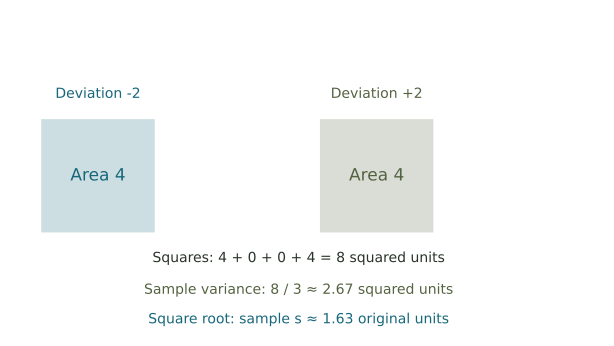

Center and spread
Use the mean, median, mode, range, and sample standard deviation to explain what a set of observations does—and does not—tell us.
Center and spread together
First ask where the observations sit, then ask how much they vary. Work through the examples before entering your answers. The reading explains each measure, and the explorer shows the same quantities in a graph and a table.
Use the sample SD formula with n − 1. Keep extra precision until your final answer; two decimal places are enough for the SD questions here. Responses save in this browser. Enter your name at the bottom when you print your completed work for submission in Canvas.
Part 1. Customer complaints
Three centers can differ
For 1, 2, 2, 3, 12, the mean is 20/5 = 4. The median is 2 and the mode is 2. Changing the largest value from 12 to 4 gives mean 2.4, while the median and mode stay at 2.
A store recorded the number of customer complaints received on ten days:
3, 0, 5, 2, 1, 4, 2, 8, 2, 3.
For the comparison below, remove the value 8. There are now nine observations.
Part 2. Totals, missing values, and range
Recover a total
Four scores with mean 75 total 4 × 75 = 300. If three scores are 70, 80, and 72, their sum is 222, leaving 78 for the missing score. For 4, 7, 9, 14, the range is 14 − 4 = 10.
A missing test score
Seven students have mean score 80. Six scores are 72, 78, 84, 80, 76, and 88.
A data set has range 40 and minimum 15.
Two delivery drivers
| Day 1 | Day 2 | Day 3 | Day 4 | Day 5 | |
|---|---|---|---|---|---|
| Driver A | 12 | 14 | 11 | 13 | 15 |
| Driver B | 8 | 18 | 10 | 16 | 13 |
Part 3. Build a sample-SD table
Use the data 3, 5, 5, 7. Work down one column at a time: subtract the mean, then square each deviation. A zero deviation is a real numerical answer.
| Value x | Deviation x − mean | Squared deviation |
|---|---|---|
| 3 | ||
| 5 | ||
| 5 | ||
| 7 |

Part 4. The same center, different spread
Set A: 50, 51, 50, 49, 50. Set B: 30, 40, 50, 60, 70. Make a prediction about spread before calculating.

Part 5. One unusually large value
Use 5, 6, 7, 8, 9, 10, 85.
Replace 85 with 11, keeping seven observations.
Check the numerical feedback and review your explanations before printing. The numerical checks do not grade your written reasoning.